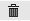

Alterar Pessoa Física
Dados Bancários
Para cadastrar Dados Bancários, acione o botão será exibido o formulário abaixo sendo necessário o preenchimento dos campos solicitados, observando que os campos com asterísco (*) são de preenchimento obrigatório.
Para Salvar os dados, acione a opção  ;
;
Para voltar a tela anterior e não registrar os dados informados, acione a opção .
As informações serão exibidas conforme figura abaixo:
Para alterar emails da Pessoa Física, acione na coluna "Ações" a opção  ;
;
Para excluir os dados de Pessoa Física, acione na coluna "Ações" a opção  .
Após informar os dados clique no botão desejado:
Para voltar a tela anterior, acione a opção ;
Para Salvar os dados, acione a opção ;
Para não registrar os dados informados, acione a opção o sistema retorna para a tela "Pesquisar Pessoa".
o sistema retorna para a tela "Pesquisar Pessoa".

Created with the Personal Edition of HelpNDoc: Easily create CHM Help documents